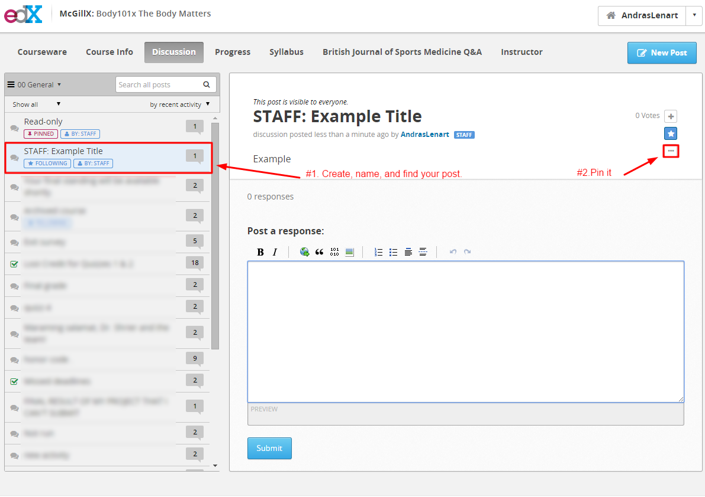
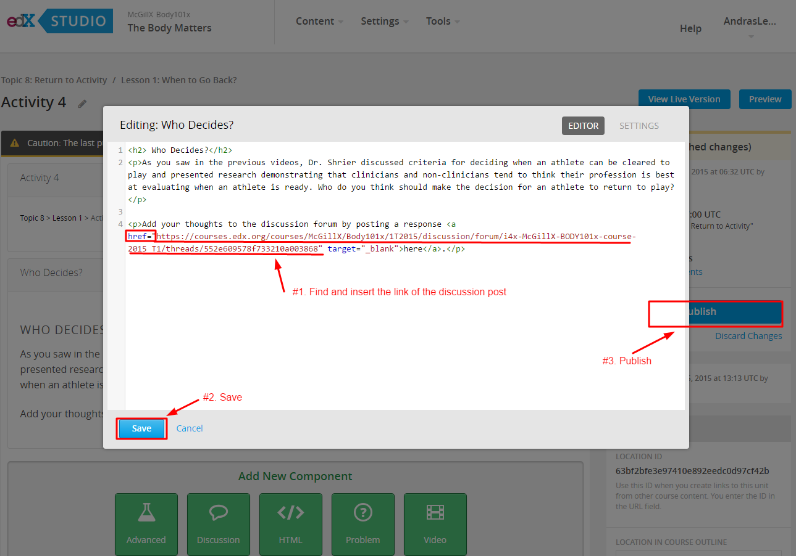
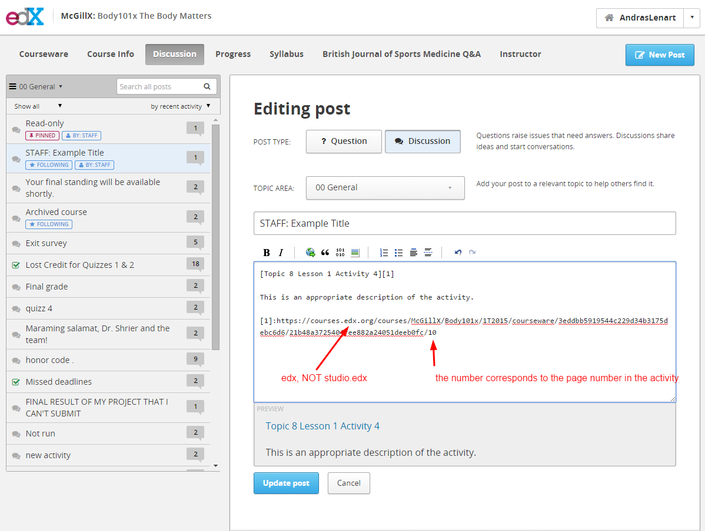

Creating Course Discussion Threads¶
On the Course Page:¶
- Create a “New Post” [STAFF]:...
- Click the upper navbar “Discussion” tab
- Find the post you just created
- Pin the post to the top of the discussion
- Open the post
- Right click the post and copy the link address

On the Studio Page:¶
- Click edit on the component which contains the “here” hyperlink
- In the window that opens edit the html
- Find the href=””
- href = “Paste Url for Discussion Post Here”
- Click save
- Click Publish
- Test that the hyperlink on the studio page takes you to the discussion post.

Complete the discussion post¶
- Go back to the discussion post
- Hyperlink the title to the activity in the courseware (the normal courseware, not the studio version)
- Finish the discussion post by adding a description and ensuring the URL has a number corresponding to the page number after the slash.
